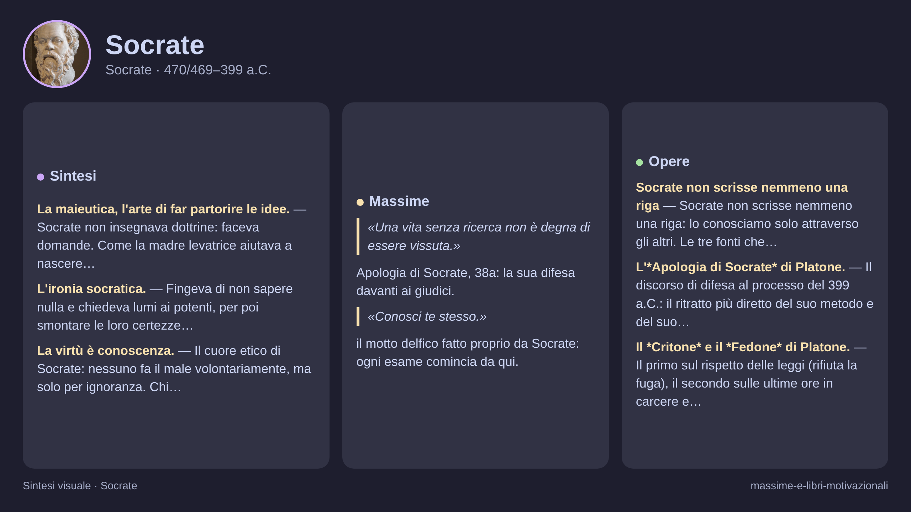

Socrate
Socrate · 470/469–399 a.C.
«So di non sapere»
- Maieutica
- Dialogo
- Ironia
- Dotta ignoranza
💬La massima
"So di non sapere."
— attribuita a Socrate, dal racconto di Platone nell'Apologia di Socrate (21d)
Spiegazione. È la frase più famosa della filosofia, e anche la più fraintesa. Non è falsa modestia né rassegnazione: è una dichiarazione di metodo. Nell'Apologia, Socrate racconta che l'amico Cherefonte aveva chiesto all'oracolo di Delfi chi fosse il più sapiente tra gli uomini, e la Pizia aveva risposto: Socrate. Lui, che si sentiva ignorante, interroga allora politici, poeti e artigiani, e scopre che tutti credono di sapere ciò che in realtà non sanno. Da qui la conclusione: «è probabile che io sia più sapiente di lui almeno in questo piccolo particolare, che le cose che non so neppure credo di saperle» (21d).
Una precisazione onesta. La formula secca «so di non sapere» non compare parola per parola in Platone: è la parafrasi tradizionale — attestata già in Diogene Laerzio — che condensa fedelmente quel passo. Il senso però è autentico e sta al cuore di tutto il pensiero socratico.
Perché è rivoluzionaria. Socrate rovescia l'idea di sapienza: il sapiente non è colui che sa tutto, ma colui che sa di non sapere e proprio per questo continua a cercare. L'ammissione di ignoranza non chiude la ricerca, la apre: è il motore del domandare. Duemilaquattrocento anni prima degli psicologi moderni, Socrate aveva già descritto quello che oggi chiamiamo effetto Dunning-Kruger — i meno competenti sono proprio quelli più sicuri di sé, perché manca loro persino la capacità di accorgersi dei propri limiti.
👤Biografia
Socrate nacque ad Atene intorno al 470 o 469 a.C., figlio dello scalpellino Sofronisco e della levatrice Fenarete — e non è un dettaglio da poco: dirà di aver ereditato dalla madre l'arte di «far partorire» le anime con le domande, la celebre maieutica.
Il soldato e il povero. Combatté con coraggio nelle battaglie della guerra del Peloponneso (Potidea, Delio, Anfipoli), ma visse da povero in canna: un mantello logoro d'inverno e d'estate, piedi scalzi, niente professione. Non prese mai soldi per insegnare — a differenza dei sofisti — e si mantenne con l'aiuto degli amici. Sposò Santippe, passata alla storia (forse ingiustamente) come bisbetica, ed ebbe tre figli.
Il tafano. Per le strade, nelle piazze e nelle botteghe di Atene fermava chiunque — potenti e artigiani — e con domande innocenti smontava le loro certezze. Lui stesso si paragonò a un tafano che punzecchia un cavallo nobile ma pigro: Atene. Brutto come un sileno, con naso camuso e occhi sporgenti — così lo descrive Alcibiade nel Simposio di Platone — nascondeva dentro statuette d'oro: un'anima straordinaria.
Il processo. Nel 399 a.C., a settant'anni, fu trascinato in tribunale con due accuse: corrompere i giovani e non credere negli dèi della città, introducendone di nuovi. Dietro c'erano rancori politici: alcuni suoi frequentatori erano legati ai Trenta Tiranni. Condannato a morte per pochi voti, rifiutò la fuga organizzata dagli amici — rispettare le leggi, disse, anche quando sono ingiuste contro di te — e bevve la cicuta circondato dai discepoli, come racconta Platone nel Fedone.
Il carattere. Ironico, testardo, coraggioso in guerra come in tribunale. Non scrisse mai nulla: tutto ciò che sappiamo di lui passa dalle parole degli altri.
📌Sintesi del pensiero
Il pensiero di Socrate, che non scrisse nulla, sta tutto nel dialogo come esame di sé e degli altri: partire dal sapere di non sapere per cercare insieme il vero, il giusto e la vita buona.
- Metodo: domande e confutazione smascherano la falsa sapienza e aprono la ricerca del vero e del giusto.
- Etica: virtù, bene e cura dell'anima coincidono con la conoscenza vagliata dall'esame quotidiano.
- Senso politico: formare cittadini capaci di giudizio autonomo, contro retorica, conformismo e opinioni non esaminate.
🏛️I temi fondamentali
- La maieutica, l'arte di far partorire le idee. Socrate non insegnava dottrine: faceva domande. Come la madre levatrice aiutava a nascere i bambini, lui aiutava a nascere i pensieri, mostrando che l'interlocutore sapeva già più di quanto credesse — o molto meno.
- L'ironia socratica. Fingeva di non sapere nulla e chiedeva lumi ai potenti, per poi smontare le loro certezze pezzo per pezzo. Non era crudeltà: era l'unico modo per far crollare le opinioni non esaminate.
- La virtù è conoscenza. Il cuore etico di Socrate: nessuno fa il male volontariamente, ma solo per ignoranza. Chi conosce davvero il bene non può non seguirlo. Da qui l'idea rivoluzionaria che educare significa rendere migliori.
- La cura dell'anima. Ricchezza, fama e corpo passano; l'anima resta. Il compito della vita è renderla migliore con l'esame quotidiano — da cui il motto delfico che fece suo: «conosci te stesso».
📚Le opere principali
- Socrate non scrisse nemmeno una riga: lo conosciamo solo attraverso gli altri. Le tre fonti che contano:
- L'Apologia di Socrate di Platone. Il discorso di difesa al processo del 399 a.C.: il ritratto più diretto del suo metodo e del suo coraggio. Da leggere per prima.
- Il Critone e il Fedone di Platone. Il primo sul rispetto delle leggi (rifiuta la fuga), il secondo sulle ultime ore in carcere e l'immortalità dell'anima.
- I Memorabili di Senofonte. Un Socrate più pratico e quotidiano, utile a confrontare con quello platonico. Da maneggiare con cura: ognuno dipinge il maestro a propria immagine.
💬Massime celebri
«Una vita senza ricerca non è degna di essere vissuta.» — Apologia di Socrate, 38a: la sua difesa davanti ai giudici.
«Conosci te stesso.» — il motto delfico fatto proprio da Socrate: ogni esame comincia da qui.
⌛Contesto storico
- Socrate visse tutta la vita ad Atene, nel cuore del V secolo a.C., in una città di poche decine di migliaia di cittadini ma centro del mondo greco per ricchezza, arte e politica.
- Erano gli anni dell'età di Pericle. Atene, forte del tesoro della lega di Delo e del commercio marittimo, costruiva il Partenone sull'Acropoli, affollava il teatro per le tragedie di Sofocle ed Euripide e le commedie di Aristofane, discuteva ogni giorno nell'agorà e nell'assemblea. La democrazia ateniese permetteva a migliaia di cittadini maschi adulti di votare, ricoprire cariche per sorteggio e giudicare nei tribunali popolari: una libertà intensa e rumorosa, ma riservata a pochi, perché escludeva donne, schiavi e meteci.
- Questa stagione fu spezzata dalla guerra del Peloponneso, il lunghissimo conflitto contro Sparta e i suoi alleati iniziato nel 431 a.C. Nel 430 a.C. una terribile peste colpì Atene affollata di sfollati, decimando la popolazione e uccidendo nel 429 a.C. lo stesso Pericle. Socrate partecipò come oplita alle campagne di Potidea, Delio e Anfipoli, condividendo fame, freddo e pericoli con i compagni.
- La società era percorsa da un fermento nuovo. I sofisti, maestri itineranti come Protagora, Gorgia e Prodico, insegnavano a pagamento retorica e arte di convincere, mentre i giovani mettevano in discussione tradizione, religione e leggi. Dopo la sconfitta finale del 404 a.C., Atene conobbe il regime brutale dei Trenta Tiranni e poi una restaurazione democratica nervosa e sospettosa, ossessionata dai traditori.
- È in questa Atene stanca della guerra, impoverita, divisa e timorosa, che nel 399 a.C. Socrate fu processato e condannato a morte: la città che aveva inventato la libertà di parola non sopportò più il suo tafano.
- Da chi è stato influenzato i filosofi della natura (da giovane studiò Anassagora, restandone deluso perché cercava cause meccaniche e non il bene); i sofisti — Protagora, Gorgia, Prodico — che però combatte da avversario, rifiutandone il relativismo e il farsi pagare; la religiosità delfica, l'oracolo e il precetto «conosci te stesso», che trasforma in filosofia.
- A chi ha trasmesso è il crocevia di tutta la filosofia occidentale. Il suo allievo Platone ne fa il protagonista dei dialoghi e fonda l'Accademia; Senofonte ne dà un ritratto più pratico; Antistene fonda da lui i cinici, Aristippo i cirenaici, Euclide la scuola di Megara. Da lì il filo arriva agli stoici, agli scettici, a Sant'Agostino, a Cusano con la dotta ignoranza, fino a Kierkegaard, che dedica all'ironia socratica la sua tesi di laurea, e ad Hannah Arendt, che nel «dialogo silenzioso con se stessi» vede la radice del pensiero morale.
🌊L'eredità
- Platone e l'Accademia. Il discepolo più grande fece di Socrate il protagonista dei suoi dialoghi: senza Socrate non esisterebbe Platone, e senza Platone non esisterebbe quasi nulla della filosofia occidentale.
- Cinici, cirenaici, stoici. Antistene fondò il cinismo imitando la povertà di Socrate; Aristippo il piacere misurato; Zenone e gli stoici fecero della virtù-conoscenza il loro pilastro.
- Kierkegaard e il Novecento. Il filosofo danese vide in Socrate il modello dell'ironia e del singolo contro la folla. E ogni volta che un professore interroga invece di dettare, ripete il suo gesto.
🌍Esempi di oggi
Tre situazioni dove «sapere di non sapere» fa la differenza:
- Il collega che «lo sapeva già» in riunione. C'è sempre chi ha una risposta pronta su tutto — budget, software, strategia — e zittisce gli altri. Il progetto poi inciampa proprio su quel punto «sicuro». Chi invece dice «questo non lo so, verifichiamolo» sembra meno brillante ma salva il lavoro di tutti: è Socrate contro i politici ateniesi che credevano di sapere.
- La diagnosi cercata su internet. Un mal di testa, tre click, ed eccoci convinti di avere una malattia rara — o, al contrario, tranquillizzati da un forum. Il medico vero comincia invece dalle domande e dagli esami: ammette metodicamente ciò che ancora non sa. Davanti alla salute, la dotta ignoranza non è debolezza ma l'unica via alla cura giusta.
- La lite nei commenti dei social. Due sconosciuti si insultano sotto un post, entrambi certi di possedere la verità su economia, vaccini o calcio. Nessuno dei due fa una domanda, nessuno verifica una fonte. Basterebbe la mossa socratica — «cosa intendi esattamente? da dove lo sai?» — per trasformare uno scontro sterile in un confronto, o almeno per capire che non si sa abbastanza per litigare.
🧠Quiz
Rispondi in chat con la lettera di ogni risposta, es. 1B 2A 3C 4D 5B.
1 Da quale episodio, secondo l'Apologia di Platone, nasce la consapevolezza socratica del «sapere di non sapere»?
2 Cosa significa davvero, per Socrate, «so di non sapere»?
3 Cos'è la maieutica socratica?
4 Socrate non scrisse mai nulla: da chi conosciamo principalmente il suo pensiero?
5 Per quali accuse fu processato e condannato a morte nel 399 a.C.?
✅Soluzioni — tocca per vedere
- B) Il responso dell'oracolo di Delfi all'amico Cherefonte. Cherefonte chiese alla Pizia chi fosse il più sapiente e la risposta fu: Socrate. Per sciogliere l'enigma Socrate interrogò politici, poeti e artigiani, scoprendo che tutti credevano di sapere ciò che non sapevano — e capì così in che senso l'oracolo aveva ragione.
- C) Che riconoscere i propri limiti è l'inizio della ricerca. Non è scetticismo pigro né falsa modestia: è il fondamento del metodo. Chi crede di sapere smette di cercare; chi sa di non sapere continua a domandare, e proprio per questo è «più sapiente».
- A) L'arte di far «partorire» con le domande. Come la madre levatrice Fenarete faceva nascere i corpi, Socrate con domande incalzanti aiutava l'anima dell'interlocutore a partorire idee. Insegnare non è versare sapere in un vaso vuoto, ma tirare fuori ciò che è già dentro.
- B) Dai dialoghi di Platone e dai racconti di Senofonte. Il Socrate che conosciamo è filtrato dai suoi discepoli: Platone ne fa il protagonista dei dialoghi, Senofonte ce lo mostra nella vita quotidiana. (Aristofane, nelle Nuvole, lo prese in giro caricaturandolo come un sofista.)
- C) Corrompere i giovani e non credere negli dèi della città. Le accuse formali furono empietà e corruzione dei giovani; sullo sfondo pesavano i rancori politici della democrazia restaurata. Rifiutò la fuga per rispetto delle leggi e bevve la cicuta.
🔁Ripasso
«So di non sapere» ≠ «non si può sapere niente». Socrate non è uno scettico rassegnato: l'ignoranza ammessa è il punto di partenza, non il traguardo. Il contrario dello scienziato pigro è lo scienziato socratico, che proprio perché sa di non sapere continua a indagare.
Maieutica ≠ retorica dei sofisti. I sofisti insegnavano a vincere le discussioni con bei discorsi (a pagamento); Socrate insegnava a perderle bene, cioè a scoprire i propri errori con le domande (gratis). Stesso strumento — la parola — scopo opposto: apparire sapienti contro diventare sapienti.
Ironia socratica ≠ sarcasmo. Quando Socrate dice «insegnami tu che sei esperto», non sta prendendo in giro per cattiveria: sta preparando il terreno perché l'altro, parlando, si accorga da solo delle proprie contraddizioni. È gentilezza strategica, non derisione.
Domani un nuovo filosofo. Se rispondi al quiz, ti darò il punteggio e un ripasso mirato solo su ciò che hai sbagliato.
🖼️In un colpo d’occhio

Tocca l’immagine per ingrandirla.